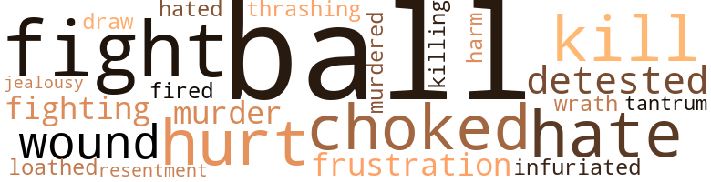

Young Tim O'Hara, by Forte, Christine (1966)
23 music-related terms matched in this text.
Most frequent terms in this topic: dance (12); music (5); danced (3); guitar (2); pipe (1)
dance.n.01
Definition: an artistic form of nonverbal communication
| word | sentence |
|---|---|
| dance | As the music stopped , Tim brought the young lady back to her seat and thanked her for the dance . |
| dance | Tim extended his arm to her and they had their dance . |
dance.v.03
Definition: skip, leap, or move up and down or sideways
| word | sentence |
|---|---|
| danced | They conversed together and , when the music was playing , they danced together . |
| danced | As the conversation became sociable , Tim asked Margaret if she would mind if he danced with one of the young ladies . |
| dance | Margaret said that she would n't mind , so he asked the one that was nearest to him if she would like to dance . |
| dance | She answered in the affirmative , so they excused themselves and went to dance . |
| dance | Then , as the music started again , Tim got up from his seat and asked the second young lady if she would like to dance . |
| dance | Tim asked , " Do you remember that I asked your permission to dance with the girls ? " |
| dance | " You asked me if it was all right for you to dance with one girl , not three , " replied Margaret . |
| dance | He did n't realize that he had only asked Margaret 's permission to dance with one girl . |
| dance | He thought she had understood that he would dance with all three of the girls , so he tried to explain it to her the best was he could . |
| dance | " I thought that you understood I was going to dance with the three girls . |
| danced | What would I look like if I had danced with one girl and did n't dance with the others ? |
| dance | What would I look like if I had danced with one girl and did n't dance with the others ? |
| dance | Perhaps that is why I was so angry when he went to dance with those girls . |
guitar.n.01
Definition: a stringed instrument usually having six strings; played by strumming or plucking
| word | sentence |
|---|---|
| guitar | Tim placed his cap on the back of his head of curly brown hair , slung his guitar over his shoulder , picked up his bag , and walked off the ship . |
| guitar | Then he put his battered suitcase and his guitar in a corner of the untidy room . |
music.n.01
Definition: an artistic form of auditory communication incorporating instrumental or vocal tones in a structured and continuous manner
| word | sentence |
|---|---|
| music | By the time he added to them and polished them up , they sounded like music to Margaret 's ears , and all in all he felt like he was ten feet tall . |
| music | They had had lots of good times together playing their music at each others ' houses and at parties , so there had never been a dull moment . |
| music | They conversed together and , when the music was playing , they danced together . |
| music | As the music stopped , Tim brought the young lady back to her seat and thanked her for the dance . |
| music | Then , as the music started again , Tim got up from his seat and asked the second young lady if she would like to dance . |
pipe.n.04
Definition: a tubular wind instrument
| word | sentence |
|---|---|
| pipe | As Margaret 's father sat on the sidelines smoking his pipe and listening to the conversation , he was thinking back and remembering his courting days - and how hard it had been for him to put his thoughts into words when he was confronted by his fiancée 's father . |
34 violence-related terms matched in this text.
Most frequent terms in this topic: ball (3); fight (3); choked (2); kill (2); hate (2)
abhor.v.01
Definition: find repugnant
| word | sentence |
|---|---|
| loathed | Then he placed his two hands over his face as if to hide his shame and shut out Tim 's eyes - for Tim was constintly looking at him , not because he loathed him , but because he was afraid of what he might do . |
draw.v.23
Definition: pull (a person) apart with four horses tied to his extremities, so as to execute him
| word | sentence |
|---|---|
| draw | She would do anything to draw attention to herself - like the afternoon that she did n't put in her appearance at the house on the corner for the weekly bridge club gathering . |
fight.n.05
Definition: a boxing or wrestling match
| word | sentence |
|---|---|
| fight | But later he remarked to his wife , " I declare , I think the young fellow is giving up the fight . " |
| fight | After he realized that all the fight was out of uncle , he sat down on the sofa beside him and , placing his hand on his uncle 's shoulder , said , " You must feel badly . |
| fight | Tim saw that all of the fight was out of Margaret , so he drew her to him , rested her head on his shoulder , and - while stroking her hair - said , " Darling , I 'm sorry , but I had to do it . |
fight.v.02
Definition: fight against or resist strongly
| word | sentence |
|---|---|
| fighting | Tim finally gave up the idea of fighting his father-in-law about his desire to help them . |
fit.n.01
Definition: a display of bad temper
| word | sentence |
|---|---|
| tantrum | Tim felt that , even though he was madly in love with Margaret and hated to know that he had lifted his hand to hurt her , he had to do something to stop this tantrum before it went any further - even if it meant the end of their friendship . |
frustration.n.03
Definition: a feeling of annoyance at being hindered or criticized
| word | sentence |
|---|---|
| frustration | Finally , out of sheer frustration , he asked , " What are you laughing at , you ninny ? " |
gag.v.06
Definition: cause to retch or choke
| word | sentence |
|---|---|
| choked | Tim had his glass to his mouth when his wife spoke , and he almost choked on that one . |
| choked | Then a seed of doubt was planted in her mind , and it grew so large that it choked out the happy plant that had been there . |
hate.v.01
Definition: dislike intensely; feel antipathy or aversion towards
| word | sentence |
|---|---|
| detested | But Margaret , who detested even the smell of beer , would have a brandy and soda . |
| hate | She told him , " You know , lots of newly-married girls hate the thought of another woman coming into their home to manage it . |
| hate | As Tim related his fears to Emma and as Emma listened , he went on to say , " I would hate to see her do that , for I do n't want my wife to work . |
| hated | Tim felt that , even though he was madly in love with Margaret and hated to know that he had lifted his hand to hurt her , he had to do something to stop this tantrum before it went any further - even if it meant the end of their friendship . |
infuriate.v.01
Definition: make furious
| word | sentence |
|---|---|
| infuriated | Tim was too frightened to answer any of the questions , and that infuriated his uncle all the more . |
injury.n.01
Definition: any physical damage to the body caused by violence or accident or fracture etc.
| word | sentence |
|---|---|
| harm | " After all , he has n't done me any harm , and he does n't even know what is troubling me , so I do n't think I 'm being fair to him . |
| hurt | She told him , " Darling , I wanted to be sure that it worked first , for if it did n't I would n't have wanted to see that hurt look on your face . " |
jealousy.n.01
Definition: a feeling of jealous envy (especially of a rival)
| word | sentence |
|---|---|
| jealousy | " She is in love with me , " he thought , " and love brings on jealousy . |
kill.v.10
Definition: cause the death of, without intention
| word | sentence |
|---|---|
| kill | " No one can make me believe Mr. Miller is that kind of a man , and yet would let his children run around and half kill each other like they do ! " |
| kill | They wo n't kill one another , for they are being taken care of by a much higher power than us - you know , the one that takes care of little children and fools ? " |
| killing | Then she would say to me , ' Timothy , me boy , you are killing yourself . ' |
murder.n.01
Definition: unlawful premeditated killing of a human being by a human being
| word | sentence |
|---|---|
| murder | For there , rolling on her beautiful , well-kept lawn , acting as if they were trying to murder each other over who should possess the ball , were none others but the Miller children . |
murder.v.01
Definition: kill intentionally and with premeditation
| word | sentence |
|---|---|
| murdered | She said , " Oh , my God , people will think that I murdered my unborn children ! |
musket_ball.n.01
Definition: a solid projectile that is shot by a musket
| word | sentence |
|---|---|
| balls | Tim and Margaret lived in a very nice middle-income neighborhood ; but even in nice middle-income neighborhoods there are children , and children do play , and when their balls go on a lawn they will always try to retrieve it , no matter whose lawn it is . |
| ball | That is not their concern ; their only interest is the ball . |
| ball | For there , rolling on her beautiful , well-kept lawn , acting as if they were trying to murder each other over who should possess the ball , were none others but the Miller children . |
| ball | This took them deeper onto the lawn , one behind the other , still hollering about who should have ownership of the ball . |
| balls | Dear , plump , jolly Mrs. Miller would be picking up skates and balls and toys of all shapes and sizes ( and making excuses at the same time ) from the time she greeted you at the front door until she ushered you to a chair ; and even then , the chair might have a coat or a jacket hanging on it . |
open_fire.v.01
Definition: start firing a weapon
| word | sentence |
|---|---|
| fired | Someone always wanted him to work for them , but after a few weeks or a month at the most he would be fired . |
pain.v.02
Definition: cause emotional anguish or make miserable
| word | sentence |
|---|---|
| hurt | " Tell me this , " he said , " did I ever do anything to hurt you at any time ? " |
resentment.n.01
Definition: a feeling of deep and bitter anger and ill-will
| word | sentence |
|---|---|
| resentment | Giving vent to her pent-up emotion , she had a good cry , not from resentment but in humility . |
thrashing.n.01
Definition: a sound defeat
| word | sentence |
|---|---|
| thrashing | So he told him , " Any time you see these two scalawags running around on your lawn , I give you permission to hold them and take off your belt and give them a good thrashing - even if you have to chase them home to do it . |
wound.n.01
Definition: an injury to living tissue (especially an injury involving a cut or break in the skin)
| word | sentence |
|---|---|
| wound | They did not believe in long engagements , for sometimes these engagements are broken ; and whenever that takes place it leaves a wound that sometimes takes forever to heal . |
wrath.n.01
Definition: intense anger (usually on an epic scale)
| word | sentence |
|---|---|
| wrath | Many a time she was on the receiving end of an object thrown by one of her children that was intended for the other ; then they would feel her wrath . |
26 religion-related terms matched in this text.
Most frequent terms in this topic: church (7); faith (7); blessing (4); God (2); confession (2)
baptize.v.01
Definition: administer baptism to
| word | sentence |
|---|---|
| christened | He christened her , and he also married her , and he will also christen her children . |
| christen | He christened her , and he also married her , and he will also christen her children . |
blessing.n.05
Definition: the act of praying for divine protection
| word | sentence |
|---|---|
| blessing | We believe that you will make a good husband , and we also hope that she will be a good wife , therefore , we give you our blessing . " |
| blessing | For Tim It was a blessing in disguise . |
| blessing | She also told her all about the moody days she had before the party , what a blessing that party had been , and how it had changed her way of thinking . |
| blessing | And we will also tell them what we would like to do in the near future , and ask their permission and their blessing . " |
church.n.02
Definition: a place for public (especially Christian) worship
| word | sentence |
|---|---|
| church | As she marched up the long aisle of the church by her father 's side while the organ played softly , her slim body was pulling a long train with two flower girls on either side sprinkling rose petals all over it . |
| church | They never forgot those few words that Margaret whispered to them in church that day . |
| church | Instead , I think I will stop at the church and have a talk with Father O'Malley and leave her for later . |
| church | That is why we have to travel so far to attend church , for she will not change her membership to the church in our neighborhood . |
| church | That is why we have to travel so far to attend church , for she will not change her membership to the church in our neighborhood . |
| church | As Tim ascended the steps to the church rectory , he saw a light in the good Father 's study . |
| church | I will see you both in church on Sunday , God willing . " |
confession.n.05
Definition: the document that spells out the belief system of a given church (especially the Reformation churches of the 16th century)
| word | sentence |
|---|---|
| confession | And Margaret , who had gone so far with her confession to Mrs. Crosby , could not afford to turn her offer down now . |
| confession | Emma walked in silence , but she was deeply impressed with Uncle Tim 's confession of guilt . |
god.n.03
Definition: a man of such superior qualities that he seems like a deity to other people
| word | sentence |
|---|---|
| God | I will see you both in church on Sunday , God willing . " |
| God | From your conversation I gather that you see a good future in store for Margaret and me , and I promise you that by God 's help I will do my best to make it come to pass . " |
prayer.n.01
Definition: the act of communicating with a deity (especially as a petition or in adoration or contrition or thanksgiving)
| word | sentence |
|---|---|
| prayer | Tim got up from his chair and said as he went out of the door , " I 'll soon be back " ; and as he went he uttered a prayer of thanks . |
religion.n.01
Definition: a strong belief in a supernatural power or powers that control human destiny
| word | sentence |
|---|---|
| faith | You love Margaret enough that you would do anything to please her , and you have enough faith in your neighbors to believe that they would do anything you ask them to do for you . |
| faith | Yes , faith and love do go hand in hand . |
| faith | " If I had as little faith in this thing as you do , I would be home at this very moment doing my work instead of trying to help you . |
| faith | Tim had a lot of faith in Mike , so he was willing to listen to any advice he might give him . |
| faith | There you have two people with similar thoughts running through their minds , thrown together by faith , each hoping for the same thing - that that same faith would draw them closer together and make their lives one . |
| faith | There you have two people with similar thoughts running through their minds , thrown together by faith , each hoping for the same thing - that that same faith would draw them closer together and make their lives one . |
| faith | The subject came up many times in their years together of how they had met , and of how faith had drawn them together ; and Emma always ended it with , " We can thank the dirty pigeons for that . " |
satan.n.01
Definition: (Judeo-Christian and Islamic religions) chief spirit of evil and adversary of God; tempter of mankind; master of Hell
| word | sentence |
|---|---|
| devil | As both Tims looked each other in the eyes , the uncle asked , " Who the devil are you ? |